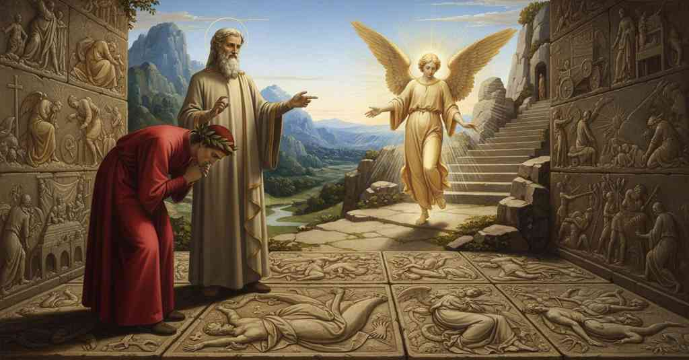

Purgatorio — Canto 12

1
Di pari, come buoi che vanno a giogo,
Side by side, like oxen that go in a yoke,
さながら、軛につながれて歩む牛のように、
2
m’andava io con quell’ anima carca,
I went along with that burdened soul,
私はあの重荷を負う魂と共に行き、
3
fin che ’l sofferse il dolce pedagogo.
as long as the gentle teacher allowed it.
かの優しき師がそれを許すまで続けた。
4
Ma quando disse: «Lascia lui e varca;
But when he said: “Leave him and cross over;
だが師は言った。「彼を後にし、進め。
5
ché qui è buono con l’ali e coi remi,
for here it is good with sails and with oars,
ここでは翼と櫂を使い、
6
quantunque può, ciascun pinger sua barca»;
as much as he can, that each one push his boat”;
各々が己が舟を力の限り漕ぐのがよいのだ」。
7
dritto sì come andar vuolsi rife’mi
straight as one ought to walk I made myself again
歩むべき姿である直立の姿勢に、私は
8
con la persona, avvegna che i pensieri
in my person, although the thoughts
身体を戻した、もっとも私の想念は
9
mi rimanessero e chinati e scemi.
remained in me both bent and humbled.
屈み、そして謙虚なままであったが。
10
Io m’era mosso, e seguia volontieri
I had set myself in motion, and was following willingly
私は動き出し、喜んで後を追った、
11
del mio maestro i passi, e amendue
the steps of my master, and we both
我が師の歩みを。そして我ら二人は
12
già mostravam com’ eravam leggeri;
already were showing how light we were;
すでにいかに身軽であるかを示していた。
13
ed el mi disse: «Volgi li occhi in giùe:
and he said to me: “Turn your eyes downward:
すると彼は私に言った。「目を下に向けよ。
14
buon ti sarà, per tranquillar la via,
it will be good for you, to ease the way,
道行きを安らかにするために、
15
veder lo letto de le piante tue».
to see the bed of your soles.”
汝の足裏が踏む床を見るのは良きことであろう」。
16
Come, perché di lor memoria sia,
As, so that there may be a memory of them,
あたかも、彼らの記憶が残るように、
17
sovra i sepolti le tombe terragne
over the buried the earthen tombs
埋葬された者の上の地中の墓が
18
portan segnato quel ch’elli eran pria,
bear marked what they were before,
彼らが生前何者であったかを印し、
19
onde lì molte volte si ripiagne
wherefore there one often weeps again
それゆえにそこで人はしばしば再び涙し、
20
per la puntura de la rimembranza,
for the sting of remembrance,
追憶の棘に刺されて、
21
che solo a’ pïi dà de le calcagne;
which only spurs on the pious;
その棘はただ敬虔な者にのみ鞭を打つのだが、
22
sì vid’ io lì, ma di miglior sembianza
so I saw there, but of better appearance
そのように私はそこに見た、だがより優れた姿で、
23
secondo l’artificio, figurato
according to the craftsmanship, figured
その技巧において、描かれているのを、
24
quanto per via di fuor del monte avanza.
all that of the path juts out from the mountain.
山から道として外へ張り出している限りの場所に。
25
Vedea colui che fu nobil creato
I saw him who was created noble
私は見た、最も高貴に創られた者を、
26
più ch’altra creatura, giù dal cielo
more than any other creature, down from heaven
他のいかなる被造物よりも、天から下へ
27
folgoreggiando scender, da l’un lato.
falling like lightning, on one side.
稲妻のように落ちるのを、一方の側に。
28
Vedëa Brïareo fitto dal telo
I saw Briareus, pierced by the celestial
私は見た、ブリアレオスが天の矢に貫かれ
29
celestïal giacer, da l’altra parte,
bolt, lie on the other side,
横たわるのを、もう一方の側に、
30
grave a la terra per lo mortal gelo.
heavy on the earth from the mortal chill.
死の冷たさで大地に重く。
31
Vedea Timbreo, vedea Pallade e Marte,
I saw Thymbraeus, I saw Pallas and Mars,
私は見た、ティンブレオを、パラスとマルスを見た、
32
armati ancora, intorno al padre loro,
still armed, around their father,
まだ武装して、彼らの父の周りに、
33
mirar le membra d’i Giganti sparte.
gazing on the scattered limbs of the Giants.
散らばった巨人の四肢を見つめるのを。
34
Vedea Nembròt a piè del gran lavoro
I saw Nimrod at the foot of the great work,
私は見た、ネンブロットを、大いなる仕事の足元で
35
quasi smarrito, e riguardar le genti
as if bewildered, looking at the peoples
ほとんど途方に暮れ、人々を見つめ、
36
che ’n Sennaàr con lui superbi fuoro.
who in Shinar were proud with him.
セナールの地で彼と共に傲慢であった者たちを。
37
O Nïobè, con che occhi dolenti
O Niobe, with what grieving eyes
おおニオベよ、どれほど悲しい眼で
38
vedea io te segnata in su la strada,
I saw you depicted upon the path,
私はあなたを見たことか、道の上に刻まれて、
39
tra sette e sette tuoi figliuoli spenti!
among your seven and seven children slain!
七人と七人のあなたの殺された子らの間で！
40
O Saùl, come in su la propria spada
O Saul, how upon your own sword
おおサウルよ、いかにして自らの剣の上に
41
quivi parevi morto in Gelboè,
you there appeared dead on Gilboa,
ここギルボアで死んでいるように見えたことか、
42
che poi non sentì pioggia né rugiada!
which then felt neither rain nor dew!
その後、雨も露も感じなかった！
43
O folle Aragne, sì vedea io te
O foolish Arachne, so I saw you
おお愚かなアラクネよ、そうだ、私はあなたを見た
44
già mezza ragna, trista in su li stracci
already half a spider, sad upon the tatters
すでに半ば蜘蛛となり、悲しげにぼろ布の上で
45
de l’opera che mal per te si fé.
of the work that was evilly done for you.
あなたにとって不幸にもなされた作品の。
46
O Roboàm, già non par che minacci
O Rehoboam, your image there no longer
おおレハブアムよ、もはや脅しているようには見えない
47
quivi ’l tuo segno; ma pien di spavento
seems to threaten; but full of terror
ここでのあなたの姿は。しかし恐怖に満ちて
48
nel porta un carro, sanza ch’altri il cacci.
a chariot carries it off, without anyone pursuing.
他の者が追うことなく、一台の戦車が彼を運んでいく。
49
Mostrava ancor lo duro pavimento
The hard pavement showed again
さらに硬い敷石は示していた
50
come Almeon a sua madre fé caro
how Alcmaeon made his mother pay dearly
いかにアルクマイオンがその母に高くつかせたか
51
parer lo sventurato addornamento.
for the ill-fated ornament.
その不運な装飾品を。
52
Mostrava come i figli si gittaro
It showed how the sons threw themselves
示していた、いかに息子たちが飛びかかったか
53
sovra Sennacherìb dentro dal tempio,
upon Sennacherib inside the temple,
神殿の中でセンナケリブの上に、
54
e come, morto lui, quivi il lasciaro.
and how, he being dead, they left him there.
そして、彼が死んだ後、いかにそこに彼を放置したかを。
55
Mostrava la ruina e ’l crudo scempio
It showed the ruin and the cruel slaughter
示していた、破滅と残酷な殺戮を
56
che fé Tamiri, quando disse a Ciro:
that Tomyris wrought, when she said to Cyrus:
タミリスが行った、キュロスに言った時の、
57
«Sangue sitisti, e io di sangue t’empio».
“You thirsted for blood, and I fill you with blood.”
「汝は血を渇望した、私は汝を血で満たしてやろう」。
58
Mostrava come in rotta si fuggiro
It showed how in rout fled
示していた、いかに敗走して逃げたか
59
li Assiri, poi che fu morto Oloferne,
the Assyrians, after Holofernes was dead,
アッシリア人が、ホロフェルネスが死んだ後、
60
e anche le reliquie del martiro.
and also the remains of the slaughter.
そしてまた、その惨殺の残骸をも。
61
Vedeva Troia in cenere e in caverne;
I saw Troy in ashes and in caverns;
私は見た、トロイアが灰と洞穴と化しているのを。
62
o Ilïón, come te basso e vile
O Ilion, how low and vile
おおイリオンよ、いかにあなたを低く卑しいものとして
63
mostrava il segno che lì si discerne!
the carving discerned there showed you!
そこに見分けられる印は示していたことか！
64
Qual di pennel fu maestro o di stile
What master of brush or of stylus
いかなる筆の達人、あるいは彫刻刀の達人が
65
che ritraesse l’ombre e ’ tratti ch’ivi
was there who could have portrayed the shades and the features that there
そこにある影や線描を描き出すことができただろうか、
66
mirar farieno uno ingegno sottile?
would make a subtle mind marvel?
鋭い才知の者をも驚嘆させるであろう。
67
Morti li morti e i vivi parean vivi:
The dead seemed dead and the living seemed alive:
死者は死者のように、生者は生きているように見えた。
68
non vide mei di me chi vide il vero,
he who saw the truth did not see better than I,
真実を見た者も私より良くは見なかっただろう、
69
quant’ io calcai, fin che chinato givi.
for all that I trod upon, while I went bent over.
私が踏みしめたものを、身を屈めて進む間は。
70
Or superbite, e via col viso altero,
Now be proud, and on with haughty face,
さあ傲慢であれ、そして高慢な顔つきで進め、
71
figliuoli d’Eva, e non chinate il volto
sons of Eve, and do not bend your face
エヴァの子らよ、そして顔を伏せるな
72
sì che veggiate il vostro mal sentero!
so that you may see your evil path!
あなたがたの悪しき道筋を見るほどには！
73
Più era già per noi del monte vòlto
More of the mountain was already turned by us
我らが回った山道はすでに多く
74
e del cammin del sole assai più speso
and of the sun’s path much more was spent
太陽の道のりも遥かに多く費やされていた
75
che non stimava l’animo non sciolto,
than the mind, not yet free, had estimated,
解き放たれていない心が推し量るよりも。
76
quando colui che sempre innanzi atteso
when he who always, attentive, went before
その時、常に先を見据えて
77
andava, cominciò: «Drizza la testa;
began: “Lift up your head;
進んでいた人が、言った、「頭を上げよ、
78
non è più tempo di gir sì sospeso.
it is no longer time to go so absorbed.
もはや、うなだれて歩く時ではない。
79
Vedi colà un angel che s’appresta
See there an angel who makes ready
向こうを見よ、一人の天使が準備しているのを
80
per venir verso noi; vedi che torna
to come toward us; see that there returns
我らの方へ来ようと。見よ、戻ってくるのを
81
dal servigio del dì l’ancella sesta.
from the service of the day the sixth handmaiden.
昼の務めから第六の侍女が。
82
Di reverenza il viso e li atti addorna,
With reverence adorn your face and actions,
敬意をもって顔と振る舞いを飾り、
83
sì che i diletti lo ’nvïarci in suso;
so that he may delight in sending us upward;
彼が我らを上へ送ることを喜ぶように。
84
pensa che questo dì mai non raggiorna!».
think that this day will never dawn again!”
この日は二度と明けぬと心せよ！」。
85
Io era ben del suo ammonir uso
I was well used to his admonishing
私は彼の戒めにすっかり慣れていた
86
pur di non perder tempo, sì che ’n quella
never to lose time, so that on that
時を無駄にするなという。だからその
87
materia non potea parlarmi chiuso.
matter he could not speak to me obscurely.
件については、私に曖昧に語ることはできなかった。
88
A noi venìa la creatura bella,
Toward us came the beautiful creature,
我らのもとへ来たその美しい被造物は、
89
biancovestito e ne la faccia quale
clothed in white and in his face such as
白い衣をまとい、その顔はさながら
90
par tremolando mattutina stella.
a trembling morning star appears.
揺らめきながら輝く明けの明星のようであった。
91
Le braccia aperse, e indi aperse l’ale;
He opened his arms, and then he opened his wings;
腕を開き、次いで翼を開いた。
92
disse: «Venite: qui son presso i gradi,
he said: “Come: here the steps are near,
そして言った、「来たれ、ここに階段は近く、
93
e agevolemente omai si sale.
and from now on one easily ascends.
これよりは容易に登ることができる。
94
A questo invito vegnon molto radi:
To this invitation come very few:
この招きに応じる者はまことに稀である。
95
o gente umana, per volar sù nata,
O human race, born to fly upward,
おお、上へ飛ぶために生まれた人の子よ、
96
perché a poco vento così cadi?».
why at a little wind do you so fall?”
なぜかくも僅かな風に墜ちるのか？」。
97
Menocci ove la roccia era tagliata;
He led us to where the rock was cut;
彼は我らを岩が切り開かれた場所へ導き、
98
quivi mi batté l’ali per la fronte;
there he beat his wings upon my forehead;
そこで私の額を翼で打った。
99
poi mi promise sicura l’andata.
then he promised me a safe passage.
そして私に安らかな道行きを約束した。
100
Come a man destra, per salire al monte
As on the right hand, to climb the mountain
右手にある、山へ登るために
101
dove siede la chiesa che soggioga
where the church sits that dominates
教会が君臨するあの山へ
102
la ben guidata sopra Rubaconte,
the well-guided city over Rubaconte,
ルバコンテ橋の上のよく治められた都を、
103
si rompe del montar l’ardita foga
the daring rush of the ascent is broken
登りの険しい勢いが砕かれるように
104
per le scalee che si fero ad etade
by the stairs that were made in an age
かつて作られた階段によって
105
ch’era sicuro il quaderno e la doga;
when the ledger and the stave were secure;
帳簿も枡も確かであった時代に。
106
così s’allenta la ripa che cade
so the bank that falls
そのように、崖は緩やかになる
107
quivi ben ratta da l’altro girone;
here quite steeply from the other circle is made less steep;
ここでは他の環道から急に落ちてくるが。
108
ma quinci e quindi l’alta pietra rade.
but on this side and that the high rock grazes.
しかしこちら側とあちら側で、高い岩がかすめる。
109
Noi volgendo ivi le nostre persone,
As we were turning our persons there,
我らがそこで身を転じると、
110
‘Beati pauperes spiritu!’ voci
‘Blessed are the poor in spirit!’ voices
「心の貧しき者は幸いなり！」という声が
111
cantaron sì, che nol diria sermone.
sang so, that no speech could tell it.
歌われた、言葉では言い尽くせぬほどに。
112
Ahi quanto son diverse quelle foci
Ah, how different are those entrances
ああ、なんと異なることか、あの入り口は
113
da l’infernali! ché quivi per canti
from the infernal! for here one enters with songs,
地獄のそれとは！ ここでは歌によって
114
s’entra, e là giù per lamenti feroci.
and there below with fierce laments.
入るが、かの下では獰猛な嘆きによって入るのだ。
115
Già montavam su per li scaglion santi,
Already we were climbing the holy stairs,
我らはすでに聖なる階段を登っており、
116
ed esser mi parea troppo più lieve
and I seemed to be much lighter
私にはあまりにも軽く感じられた
117
che per lo pian non mi parea davanti.
than I had seemed on the plain before.
前に平地で感じたよりも。
118
Ond’ io: «Maestro, dì, qual cosa greve
Wherefore I: “Master, tell me, what heavy thing
そこで私は言った。「師よ、教えてください、いかなる重荷が
119
levata s’è da me, che nulla quasi
has been lifted from me, that almost no
私から取り去られたのですか、ほとんど何の
120
per me fatica, andando, si riceve?».
fatigue is felt by me in walking?”.
労苦も、歩いていて、感じられないのですが」。
121
Rispuose: «Quando i P che son rimasi
He replied: “When the P’s that have remained
彼は答えた。「そなたの額になお残っているPの字が、
122
ancor nel volto tuo presso che stinti,
still on your face, almost faded,
今はほとんど消えかかっているが、
123
saranno, com’ è l’un, del tutto rasi,
are, like the one, completely erased,
あのひとつのように、全て消し去られた時には、
124
fier li tuoi piè dal buon voler sì vinti,
your feet will be so conquered by good will,
そなたの足は善き意志にすっかり打ち負かされて、
125
che non pur non fatica sentiranno,
that not only will they feel no fatigue,
労苦を感じないばかりか、
126
ma fia diletto loro esser sù pinti».
but it will be their delight to be pushed upward”.
上へ向かうことが喜びとなるだろう」。
127
Allor fec’ io come color che vanno
Then I did like those who go
その時、私はこうする者たちのようにした
128
con cosa in capo non da lor saputa,
with something on their head unknown to them,
頭に自分では知らないものを載せて歩き、
129
se non che ’ cenni altrui sospecciar fanno;
unless the gestures of others make them suspect;
ただ他人の仕草からそれを察する者たちのように。
130
per che la mano ad accertar s’aiuta,
for which the hand helps itself to ascertain,
そのため手は確かめるのを助け、
131
e cerca e truova e quello officio adempie
and seeks and finds and fulfills that office
探し、見つけ、あの役目を果たす
132
che non si può fornir per la veduta;
which cannot be supplied by sight;
視覚では果たせない役目を。
133
e con le dita de la destra scempie
and with the fingers of my right hand spread,
そして広げた右手の指で、
134
trovai pur sei le lettere che ’ncise
I found only six of the letters that he of the keys
私は六つしかない文字を見つけた、あの鍵持つ方が
135
quel da le chiavi a me sovra le tempie:
had inscribed on me above the temples:
私のこめかみに刻んだ文字が。
136
a che guardando, il mio duca sorrise.
at which sight, my leader smiled.
それを見て、我が導き手は微笑んだ。